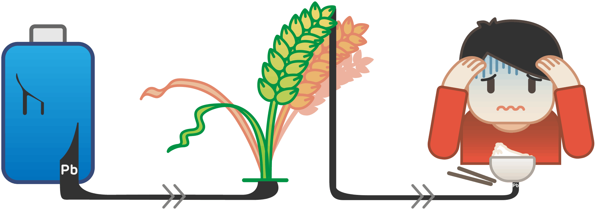
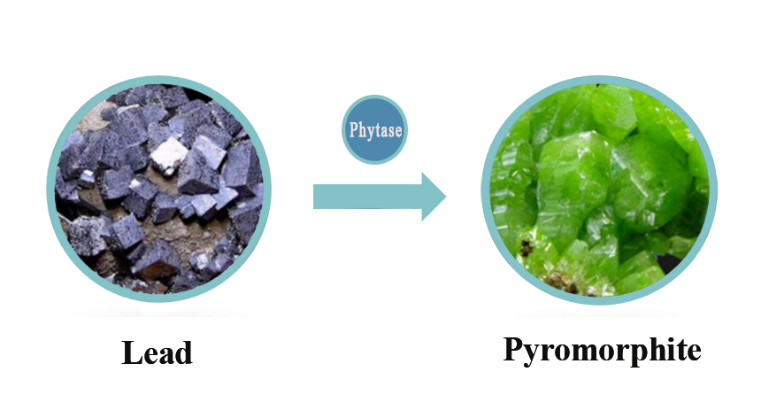

PROJECT BACKGROUND
Lead is one of persistent toxic substances (PTS), and lead pollution is typical heavy metal pollution in soil environment. Stable lead ions in soil can accumulate through crops, and finally enter human body, causing great impact on the ecosystem and human health.[1]
The Institute for Health Metrics and Evaluation (IHME) estimated that, in 2017, lead exposure accounted for 1.06 million deaths and 24.4 million years of healthy life lost (disability-adjusted life years) worldwide due to long-term effects on health. The IHME also estimated that, in 2016, lead exposure accounted for 63.2% of the global burden of idiopathic developmental intellectual disability, 10.3% of the global burden of hypertensive heart disease, 5.6% of the global burden of the ischaemic heart disease and 6.2% of the global burden of stroke.[2]
CURRENT SITUATION
Up to now, no proper treatment methods have been developed for moderately lead-polluted cultivated lands, which are still playing a productive role. The crops produced in these lands will also pose a threat to people's health and safety.
However, considering the cultivated lands that still give full play to its production performance, current methods such as the combination of physicochemical immobilization with phytoremediation and the microbial adsorption may still have some limitations: [3,4]
- Disturbance caused by physicochemical immobilization with foreign fixing agents to the original physicochemical property of soil environment
- Negative impacts on production efficiency brought by planting a large number of lead-enriched plants
- Low fixation efficiency due to the complicated distribution of heavy metal in soil environment
- Difficulty in ensuring the survival rate of microorganisms
To transcend limitations imposed by current methods, our team attempted to re-consider this problem with a hope of adding add a new approach to treatment of soil lead pollution.
OUR INSPIRATION
Based on the current situation, we were inspired by the research on lead immobilization. Lead in soil can form exceptionally stable pyromorphite [Pb5(PO4)3X (X = Cl, F, OH)] in the presence of enough soluble phosphate with a Kspof about 10-60 — 10-80.[5] It has passed the EPA standard of the United States, and it's described to be unable to extract effective lead through the TCLP method.
This research enlightened us to form an idea: transforming lead ions into such a stable mineral.
TWO ESSENTIALS
The main component of the pyromorphite crystal is phosphate PO43-, but most phosphorus in the soil is insoluble. In the meanwhile, the complex soil environment contributes to the relatively dispersed heavy metals.
So，in order to achieve our goal, we need to get two essentials prepared:
- a significant amount of soluble phosphate
- a certain way to relatively accumulate soil lead
In this case, native phosphorus-solubilizing microorganisms in the soil and native earthworms provide us with great help.

Soil phosphorus-soluble microorganisms can convert insoluble phosphorus from soil to soluble phosphorus by secreting phosphate-solubilizing enzymes and organic acids.[6] However, the phosphatase enzyme does not play a good role in the neutral environment of the earthworms' intestines. Finally, we find a more suitable enzyme, phytase, which has similar function with phosphatase.
As an indigenous worm in the soil, earthworms have certain tolerance and enrichment ability to heavy metals. [7] Therefore, earthworms can be ideal helpers：
- Earthworms can live in the soil polluted by heavy metals and accumulate heavy metal ions in their bodies.
- Earthworms' intestines can be good culture medium for our selected engineered bacteria.[8]
OUR STRATEGY
Our project plans to employ earthworms as mobile carriers for heavy metal treatment, and utilize bacillus subtilis, the dominant symbiotic bacterium in earthworm intestine, as an engineered bacterium to achieve the enrichment and immobilization process of heavy metals. Earthworms can accumulate lead ions in soil by intaking the soil, and we employ the Toehold switch based on the oxygen-regulated switch in Bacillus subtilis to precisely regulate behavior of our engineered bacteria
As a result, the engineered bacteria can secrete phytase in the earthworms’ intestines, therefore transforming invalid phosphorus element into soluble phosphate in the soil eaten by earthworms. The soluble phosphate work together with lead ions and some chloridion which originally exist in soil, thus leading to the formation of pyromorphite.. Finally, the pyromorphite and some engineered bacteria are discharged along with earthworm intestinal excrement into the external aerobic environment. Under the joint action of oxygen-regulated switch and Toehold switch, the suicide module of our engineered bacteria is triggered, thus guaranteeing the biosafety of our project.
In this year, due to isolation caused by COVID-19, we are unable to do our wet lab experiments. We verify our concept based on literature and we employ mathematical models to predict results and feasibility.
REFERENCE
- [1]Teng, Z.; Shao, W.; Zhang, K.; Yu, F.; Huo, Y.; Li, M., Enhanced passivation of lead with immobilized phosphate solubilizing bacteria beads loaded with biochar/ nanoscale zero valent iron composite. J Hazard Mater 2020, 384, 121505.
- [2]Institute for Health Metrics and Evaluation (IHME). GBD Compare.Seattle, WA: IHME, University of Washington; 2017.
- [3]Chen Weijie. Research on the Challenges and Countermeasures of Heavy Metal Pollution Control in Farmland Soils in China[J].Environment and Development,2020,32(04):67-68.
- [4]Wang Jing, Yin Guoxun. Research status and existing problems of phytoremediation of contaminated soil[J].Guangdong Chemical Industry,2010,37(01):82-83+97.
- [5]Chen H, Zhang J, Tang L, Su M, Tian D, Zhang L, et al. Enhanced Pb immobilization via the combination of biochar and phosphate solubilizing bacteria. Environ Int. 2019;127:395-401.
- [6]Xu JC, Huang LM, Chen C, Wang J, Long XX. Effective lead immobilization by phosphate rock solubilization mediated by phosphate rock amendment and phosphate solubilizing bacteria. Chemosphere. 2019;237:124540.
- [7]Zhang, K., et al., Lead removal by phosphate solubilizing bacteria isolated from soil through biomineralization. Chemosphere, 2019. 224: p. 272-279.
- [8]Cao Jia, Wang Chong, Huang Yan, Ji Dingge, Journal of Applied Ecology Lou J. Research progress on the effects of earthworms on soil microbes and biological fertility. 2015(05):294-301.
- [9]Wang Na. Research progress in the application of earthworms and their metabolites in the remediation of heavy metal contaminated soils[J]. Modern Agricultural Science and Technology, 2018, 000(022):184-185,191.